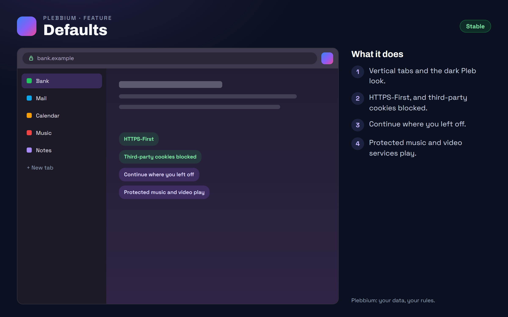

All features › Shipped › Defaults
Defaults
Stablesince 3604Plebbium starts the way Pleb would set up a browser: vertical tabs, the dark Pleb-violet look, HTTPS-First, third-party cookies blocked, and continue where you left off. Protected music and video services play.

How to use it
- Nothing to do. Change any of them in the browser's settings, as in any Chromium.
When it arrived
156.0.8078.360418 Oct 2026 · Beta and Stable
Plebbium's defaults.
156.0.8078.360619 Oct 2026 · Beta and Stable
Protected media plays (Widevine).
Why it works this way
Settings, not code changes
Defaults are starting settings, not changes to Chromium's code: every code change is a conflict waiting for the next Chromium update, and updates are security.
Protected media
Music and video services play only through Widevine. Plebbium turns it on, and Chromium fetches Google's module the first time a site needs it, as any Chromium with Widevine does.